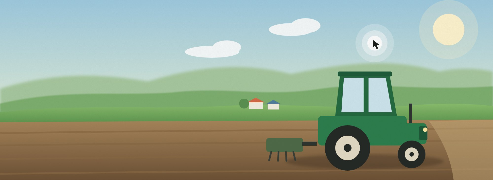
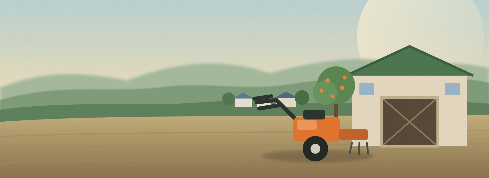

무슨 기계가 필요한지 몰라요
기종과 규격이 어렵고, 지금 내 작업에 어떤 기계가 맞는지 판단하기 힘들어요.
원하는 거래 방식과 예산을 설정해 보세요.
작물과 할 일을 고른 뒤 조건에 맞는 매물을 확인하세요.
밭 준비부터 수확까지, 필요한 작업을 골라보세요.
내 기계 관리를 이용하려면 먼저 로그인해 주세요.
로그인한 계정에 연결된 시연용 농기계를 확인할 수 있어요. 등록·수정·삭제는 지원하지 않아요.
모아농은 초보 농부를 위한 우리 동네 농기계 대여·중고 거래 서비스예요. 기계 이름을 몰라도 하려는 일만 말하면, 맞는 기계와 쓰는 법을 알려드리고 가까운 이웃 농가의 기계를 바로 빌릴 수 있게 연결해요.

처음 농사를 짓는 사람에게 농기계는 가장 높은 벽이에요. 빌리려는 사람도, 빌려줄 수 있는 사람도 불편한 구조가 그대로 남아 있어요.
기종과 규격이 어렵고, 지금 내 작업에 어떤 기계가 맞는지 판단하기 힘들어요.
1년에 며칠 쓰는 기계를 사기엔 비싸고, 가까운 곳에 원하는 날 비어 있는 기계가 있는지 알기 어려워요.
쓰지 않는 기간을 수익으로 바꿀 길이 마땅치 않고, 대여 일정과 문의를 전화로 관리하면 놓치기 쉬워요.
"감자 300평 심을 건데요"처럼 말하면 AI 상담사 농농이 작업에 맞는 기계를 추천하고, 어디에 어떻게 쓰는지 쉬운 말로 알려줘요. 농사 순서대로 작물과 할 일을 고르기만 해도 필요한 기계가 바로 나와요.

내 동네를 기준으로 가까운 농가가 올린 농기계를 하루 단위로 빌리거나, 오래 쓸 기계는 중고로 살 수 있어요. 기계를 가진 농가는 쓰지 않는 기간에 빌려주고 수익을 얻어요.
전화나 방문 없이 밤에도 주말에도 날짜를 고르고 대여를 요청해요. 원하는 기계가 대여 중이면 다시 빌릴 수 있을 때 알림으로 알려드려요.
기존 서비스는 기능이 너무 많아서, 기계 하나 잠깐 빌리거나 사는 일이 오히려 어려웠어요. 모아농은 초보 농부가 망설이지 않고 바로 끝낼 수 있는 것만 남겼어요.
하려는 일은 알지만 어떤 기계가 필요한지 모르는 사람. 추천 이유를 이해하고, 가까운 기계를 빌리거나 사요.
쓰지 않는 기간에 기계를 빌려주거나 팔고 싶은 사람. 일정과 요청을 한곳에서 관리해요.
모아농은 '모아'와 '농'을 합친 이름이에요. 흩어진 동네 농기계를 한곳에 모아, 처음 농사짓는 사람도 필요한 기계를 쉽게 만나게 하는 것이 우리의 목표예요.
초록색 추천 배지는 초보 농부님이 가장 많이 찾는 필수 옵션이에요.
입력하신 평수(1평 ≈ 3.3㎡)에 알맞은 크기의 농기계를 추려드려요.